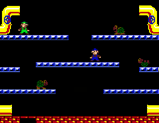

Mario Bros. fue desarrollado por Miyamoto, creador de la franquicia Mario. Jumpman fue renombrado Mario y de carpintero pasa a ser fontanero. Las primeras versiones fueron para Arcade y NES. Hay gran cantidad de versiones, ha estado incluido en los Super Mario Advance y Mario & Luigi: SuperStar Saga y también en el Animal Crossing (N64 y NGC). Mario Bros. ha sido re-editado para la consola virtual de Wii. Tambien existe una versión simplificada en las Game & Watch que ha sido recopilada en las Game & Watch Gallery 3 y 4. También hay otras versiones mas desconocidas como las de Atari 2600. 
Mario junto con su hermano Luigi, han de derrotar a las criaturas que han aparecido en las alcantarillas por debajo de Nueva York. La mecánica es muy sencilla en la parte superior aparecen las criaturas (cangrejos, tortugas y una especie de moscas) estan van descendiendo y se van por una tuberia. Para derrotarles tiene que darles por debajo (al contrario de los Super Mario Bros).La versión arcade de Nintendo y la versión de NES recibierón una positiva acogida. La versión de NES de Mario Bros vendió 2,28 millones de ejemplares.